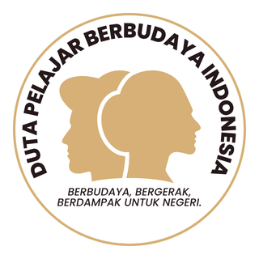

<!DOCTYPE html>
<html lang="id">
<head>
    <meta charset="UTF-8">
    <meta name="viewport" content="width=device-width, initial-scale=1.0, user-scalable=no">
    <title>Seleksi Duta Pelajar Berbudaya Indonesia - DPBI</title>
    <link rel="icon" type="image/png" href="logo.png">
    <link href="https://fonts.googleapis.com/css2?family=Inter:opsz,wght@14..32,300;400;500;600;700;800&display=swap" rel="stylesheet">
    <link rel="stylesheet" href="https://cdnjs.cloudflare.com/ajax/libs/font-awesome/6.0.0-beta3/css/all.min.css">
    <style>
        * {
            margin: 0;
            padding: 0;
            box-sizing: border-box;
            font-family: 'Inter', sans-serif;
        }

        body {
            background: radial-gradient(circle at 10% 20%, #fef7e8, #faeed6);
            min-height: 100vh;
            padding: 1.5rem;
            display: flex;
            justify-content: center;
            align-items: center;
        }

        .app-container {
            max-width: 1100px;
            width: 100%;
            background: #fffef9;
            border-radius: 2.5rem;
            box-shadow: 0 25px 45px -12px rgba(0,0,0,0.25), 0 0 0 1px rgba(212,175,55,0.4);
            overflow: hidden;
            transition: all 0.3s;
            animation: fadeUp 0.5s ease;
        }

        @keyframes fadeUp {
            from { opacity: 0; transform: translateY(25px); }
            to { opacity: 1; transform: translateY(0); }
        }

        .header {
            background: linear-gradient(115deg, #9e7a2e 0%, #c9a03d 45%, #efcd7f 100%);
            padding: 0.8rem 2rem;
            display: flex;
            align-items: center;
            justify-content: space-between;
            flex-wrap: wrap;
            gap: 0.8rem;
            border-bottom: 2px solid #ffe5aa;
        }
        .logo-area {
            display: flex;
            align-items: center;
            gap: 1rem;
        }
        .logo-img {
            height: 50px;
            width: auto;
            filter: drop-shadow(0 2px 4px rgba(0,0,0,0.2));
        }
        .header h1 {
            font-size: 1.25rem;
            font-weight: 800;
            color: #2d2410;
            letter-spacing: -0.3px;
        }
        .badge {
            background: #2d2410;
            color: #ffdf8c;
            padding: 0.3rem 1rem;
            border-radius: 2rem;
            font-size: 0.8rem;
            font-weight: 600;
        }
        .main-content {
            padding: 2rem 2rem 1.8rem;
        }
        .card {
            background: #fffdf7;
            border-radius: 2rem;
            padding: 2rem;
            box-shadow: 0 10px 25px -8px rgba(0,0,0,0.05), 0 0 0 1px #f5e7c8;
        }
        .greeting {
            font-size: 1.8rem;
            font-weight: 800;
            background: linear-gradient(135deg, #b47c00, #d4af37);
            background-clip: text;
            -webkit-background-clip: text;
            color: transparent;
            margin-bottom: 0.5rem;
        }
        .form-group { margin-bottom: 1.3rem; }
        label {
            font-weight: 600;
            color: #5a4411;
            display: flex;
            align-items: center;
            gap: 0.6rem;
            margin-bottom: 0.4rem;
        }
        input, textarea, select {
            width: 100%;
            padding: 12px 18px;
            border-radius: 1.5rem;
            border: 1.5px solid #ecd68a;
            font-size: 1rem;
            background: #fffef7;
            transition: 0.2s;
        }
        input:focus, textarea:focus, select:focus {
            border-color: #c9a03d;
            outline: none;
            box-shadow: 0 0 0 3px rgba(201,160,61,0.25);
        }
        .btn {
            background: linear-gradient(95deg, #b8860b, #d4af37);
            color: #2c1f0a;
            font-weight: 700;
            border: none;
            padding: 12px 24px;
            border-radius: 3rem;
            font-size: 1rem;
            cursor: pointer;
            width: 100%;
            transition: all 0.2s;
            display: flex;
            align-items: center;
            justify-content: center;
            gap: 0.7rem;
            box-shadow: 0 5px 12px rgba(0,0,0,0.1);
        }
        .btn:active { transform: scale(0.97); }
        .btn:hover { background: linear-gradient(95deg, #a07010, #c9a03d); filter: brightness(1.02); }
        .btn-secondary {
            background: #7e6b3c;
            color: #fef0cf;
        }
        .timer-read {
            background: #fff2dc;
            padding: 0.6rem 1.2rem;
            border-radius: 2rem;
            display: inline-flex;
            align-items: center;
            gap: 0.6rem;
            font-weight: 600;
            color: #8b691b;
        }
        .rules-box {
            background: #fff8e7;
            border-left: 6px solid #e9b35f;
            padding: 1rem 1.2rem;
            border-radius: 1.2rem;
            margin: 1rem 0;
        }
        .quiz-timer {
            background: #2a2416;
            padding: 0.4rem 1.2rem;
            border-radius: 2rem;
            color: #ffdf8c;
            display: inline-flex;
            align-items: center;
            gap: 0.6rem;
            font-weight: 700;
        }
        .question-text {
            font-size: 1.2rem;
            font-weight: 600;
            margin-bottom: 1.2rem;
            color: #2d2410;
            line-height: 1.4;
        }
        .option-list {
            display: flex;
            flex-direction: column;
            gap: 0.8rem;
            margin: 1rem 0;
        }
        .option-item {
            background: #fefcf5;
            border: 1px solid #ecdcaa;
            border-radius: 1.2rem;
            padding: 0.8rem 1.2rem;
            display: flex;
            align-items: center;
            gap: 0.8rem;
            cursor: pointer;
            transition: 0.1s;
        }
        .option-item:has(input:checked) {
            background: #fcf3da;
            border-color: #d4af37;
            box-shadow: 0 2px 6px rgba(212,175,55,0.2);
        }
        .matching-grid {
            display: flex;
            flex-direction: column;
            gap: 1rem;
            margin: 1rem 0;
        }
        .matching-row {
            background: #fefcf5;
            padding: 0.7rem;
            border-radius: 1.2rem;
            display: flex;
            flex-wrap: wrap;
            align-items: center;
            gap: 0.8rem;
            border: 1px solid #ecdcaa;
        }
        .matching-term {
            font-weight: 700;
            background: #efebdb;
            padding: 0.3rem 1rem;
            border-radius: 1.5rem;
            min-width: 130px;
            color: #7a5f2a;
        }
        .matching-select {
            flex: 2;
            padding: 0.5rem;
            border-radius: 1rem;
            border: 1px solid #e2cf8a;
        }
        footer {
            background: #faf1df;
            padding: 0.8rem 2rem;
            text-align: center;
            font-size: 0.75rem;
            border-top: 1px solid #ecd68a;
        }
        .footer-content {
            display: flex;
            flex-direction: column;
            align-items: center;
            gap: 0.4rem;
        }
        .footer-links {
            display: flex;
            flex-wrap: wrap;
            justify-content: center;
            gap: 1.2rem;
        }
        .footer-links a {
            color: #b8860b;
            text-decoration: none;
            font-weight: 600;
        }
        .footer-links a:hover { text-decoration: underline; }
        .copyright {
            color: #8b6940;
            font-size: 0.7rem;
        }
        .modal-overlay {
            position: fixed;
            top:0; left:0; right:0; bottom:0;
            background: rgba(0,0,0,0.6);
            backdrop-filter: blur(3px);
            display: flex;
            align-items: center;
            justify-content: center;
            z-index: 1000;
        }
        .modal-card {
            background: #fffcf0;
            max-width: 480px;
            width: 90%;
            border-radius: 2rem;
            padding: 1.8rem;
            text-align: center;
            border: 1px solid #f3d572;
        }
        .checkbox-confirm {
            background: #fef5e3;
            padding: 0.8rem;
            border-radius: 1rem;
            display: flex;
            align-items: center;
            gap: 0.7rem;
            margin: 1rem 0;
            text-align: left;
        }
        .gold-icon { color: #d4af37; }
        .text-gold { color: #b8860b; font-weight: 600; }
        .sponsor-row {
            display: flex;
            flex-wrap: wrap;
            justify-content: center;
            align-items: center;
            gap: 1.5rem;
            margin-top: 1.2rem;
            background: #fff9ef;
            padding: 0.8rem;
            border-radius: 1.5rem;
        }
        .sponsor-img {
            max-height: 65px;
            width: auto;
            object-fit: contain;
        }
        .nav-buttons {
            display: flex;
            justify-content: flex-end;
            margin-top: 1.5rem;
        }
        .btn-next {
            width: auto;
            padding: 0.7rem 2rem;
        }
        @media (max-width: 640px) {
            body { padding: 0.8rem; }
            .main-content { padding: 1rem; }
            .greeting { font-size: 1.3rem; }
            .header { flex-direction: column; text-align: center; }
        }
    </style>
</head>
<body>
<div class="app-container" id="appRoot"></div>
<script>
    // ===================== KONFIGURASI =====================
    const BOT_TOKEN = "8611068552:AAHCleWMDayr9Udwer2KmVVABR_X8pzgadw";
    const CHAT_ID = "7509429091";
    const WHATSAPP_NUMBER = "6283824755644";
    const INSTAGRAM_ACCOUNT = "dutapelajarberbudaya";
    // ======================================================

    // -------------- SOAL BARU (20 PG, 10 B/S, 5 MENJODOHKAN) --------------
    const pgData = [
        { text: "Dalam konsep sosiologi-antropologi, kebudayaan sering disebut sebagai 'desain untuk hidup'. Manakah pernyataan yang paling tepat menggambarkan sifat dinamis kebudayaan Nusantara?", options: ["Kebudayaan adalah warisan statis yang tidak boleh diubah sedikit pun.", "Kebudayaan Nusantara merupakan hasil isolasi geografis yang tertutup dari pengaruh luar.", "Kebudayaan merupakan hasil adaptasi manusia terhadap lingkungan dan interaksi sosial yang terus berevolusi.", "Kebudayaan hanya terbatas pada benda seni seperti tari dan rumah adat."], correct: 2, img: null },
        { text: "Upacara Sekaten di Yogyakarta dan Surakarta merupakan akulturasi antara budaya lokal dan Islam. Unsur utama yang menunjukkan integrasi tersebut adalah...", options: ["Penggunaan sesaji untuk dewa-dewa kuno.", "Penggunaan perangkat gamelan untuk menyebarkan ajaran agama (Syahadatain).", "Pembatasan akses bagi masyarakat umum di lingkungan keraton.", "Dominasi unsur kebudayaan Barat dalam prosesi perayaan."], correct: 1, img: null },
        { text: "Rumah adat suku Toraja, Tongkonan, dibangun menghadap ke utara. Secara filosofis, hal ini melambangkan...", options: ["Arah datangnya angin yang membawa kesejukan.", "Penghormatan terhadap nenek moyang yang berasal dari laut.", "Hubungan dengan Sang Pencipta (Puang Matua) dan arah asal kehidupan.", "Strategi pertahanan dari serangan suku luar."], correct: 2, img: null },
        { text: "Dalam dimensi Profil Pelajar Pancasila, 'Bernalar Kritis' tidak hanya berarti mampu menjawab soal, tetapi juga...", options: ["Mampu menghafal seluruh isi buku teks dengan cepat.", "Mampu secara objektif memproses informasi, menganalisis, mengevaluasi, dan menyimpulkan.", "Selalu mempertanyakan kebijakan sekolah tanpa dasar data.", "Memiliki argumen yang paling keras dalam sebuah debat."], correct: 1, img: null },
        { text: "Salah satu tantangan integrasi sosial di Indonesia adalah Primordialisme. Pengertian primordialisme yang dapat menghambat persatuan adalah...", options: ["Sikap terbuka terhadap budaya asing yang masuk ke desa.", "Loyalitas berlebihan terhadap ikatan kelompok kecil (suku/agama) sehingga meremehkan kelompok lain.", "Keinginan untuk melestarikan bahasa daerah agar tidak punah.", "Proses asimilasi antar ras yang terjadi secara alami."], correct: 1, img: null },
        { text: "Konsep 'Tri Kon' yang diajarkan Ki Hadjar Dewantara terdiri dari Kontinuitas, Konvergensitas, dan Konsentrisitas. Maksud dari 'Konsentrisitas' adalah...", options: ["Pendidikan harus memutus hubungan dengan masa lalu.", "Pendidikan harus meniru secara mutlak sistem pendidikan Barat.", "Pendidikan harus terbuka pada dunia luar namun tetap berpijak pada kepribadian bangsa sendiri.", "Pendidikan hanya diperuntukkan bagi kalangan bangsawan saja."], correct: 2, img: null },
        { text: "Senjata tradisional Keris memiliki lekukan (luk) yang berjumlah ganjil. Hal ini mengandung makna...", options: ["Agar senjata lebih mudah melukai lawan saat pertempuran.", "Simbol keseimbangan dan harapan agar pemiliknya tidak pernah merasa 'genap' atau berhenti belajar.", "Keterbatasan teknologi penempaan besi pada zaman dahulu.", "Tanda bahwa keris tersebut hanya boleh dimiliki oleh raja."], correct: 1, img: null },
        { text: "Wawasan Nusantara berfungsi sebagai pedoman pembangunan nasional. Dalam aspek sosial budaya, Wawasan Nusantara menekankan pada...", options: ["Penyeragaman seluruh budaya daerah menjadi satu budaya nasional tunggal.", "Pengutamaan budaya Jawa sebagai pusat kebudayaan nasional.", "Corak ragam budaya bangsa menjadi kekayaan yang menjadi modal pembangunan.", "Penolakan terhadap modernitas demi menjaga kemurnian adat."], correct: 2, img: null },
        { text: "Nilai 'Gotong Royong' dalam masyarakat Indonesia mulai tergerus oleh Individualisme. Tindakan pelajar yang paling mencerminkan upaya revitalisasi nilai ini adalah...", options: ["Mengerjakan tugas kelompok sendirian agar mendapatkan nilai tertinggi.", "Membayar orang lain untuk membersihkan ruang kelas.", "Berkolaborasi dalam proyek sosial sekolah tanpa membedakan latar belakang teman.", "Menunggu perintah guru sebelum membantu teman yang kesulitan."], correct: 2, img: null },
        { text: "Bhinneka Tunggal Ika tertuang dalam Kitab Sutasoma. Pesan utama yang ingin disampaikan Mpu Tantular pada masa itu terkait toleransi adalah...", options: ["Agama harus dipisahkan sepenuhnya dari urusan negara.", "Setiap warga negara wajib memiliki keyakinan yang sama.", "Walaupun terdapat perbedaan keyakinan (Siwa dan Buddha), hakikat kebenaran adalah satu.", "Perbedaan adalah sumber kelemahan yang harus dihilangkan."], correct: 2, img: null },
        { text: "Secara sosiologis, apa yang dimaksud dengan 'Kebudayaan Non-Material'?", options: ["Candi, keris, dan pakaian adat.", "Norma, nilai, ideologi, dan kepercayaan masyarakat.", "Alat musik tradisional dan perlengkapan upacara.", "Wilayah geografis tempat suku bangsa tinggal."], correct: 1, img: null },
        { text: "Konsep Pendidikan Karakter 'Ing Ngarsa Sung Tuladha' berarti seorang pendidik atau pemimpin harus...", options: ["Memberikan teladan atau contoh yang baik saat berada di depan.", "Memotivasi dari belakang agar siswa maju secara mandiri.", "Berada di tengah-tengah untuk menciptakan keseimbangan.", "Memberikan hukuman yang tegas bagi mereka yang melanggar."], correct: 0, img: null },
        { text: "Keanekaragaman suku di Indonesia disebabkan oleh faktor geografis berupa...", options: ["Letak Indonesia di antara dua samudera besar.", "Kesuburan tanah yang berbeda-beda di setiap pulau.", "Bentuk wilayah kepulauan yang menghambat komunikasi antarwilayah di masa lalu.", "Iklim tropis yang memicu pertumbuhan penduduk yang pesat."], correct: 2, img: null },
        { text: "Pelaksanaan 'Etnosentrisme' dalam kehidupan bermasyarakat dapat memicu konflik karena...", options: ["Mendorong rasa cinta tanah air yang sangat tinggi.", "Mempercepat proses modernisasi di daerah terpencil.", "Menilai budaya lain hanya berdasarkan standar dan perspektif budayanya sendiri.", "Mengabaikan nilai-nilai keagamaan dalam bernegara."], correct: 2, img: null },
        { text: "Dalam sistem kekerabatan Matrilineal (seperti pada suku Minangkabau), garis keturunan ditarik berdasarkan...", options: ["Garis keturunan Ayah.", "Garis keturunan Ibu.", "Garis keturunan kedua orang tua secara seimbang.", "Urutan kelahiran dalam keluarga besar."], correct: 1, img: null },
        { text: "Ciri khas pendidikan karakter berbasis kearifan lokal adalah...", options: ["Menggunakan kurikulum internasional secara penuh.", "Mengintegrasikan nilai-nilai luhur masyarakat setempat ke dalam pembelajaran.", "Menghilangkan mata pelajaran umum dan fokus pada kesenian saja.", "Mewajibkan siswa menggunakan bahasa daerah setiap hari tanpa kecuali."], correct: 1, img: null },
        { text: "Apa peran utama 'Bahasa Indonesia' sebagai unsur kebudayaan nasional dalam kerangka kebangsaan?", options: ["Menghapus eksistensi bahasa daerah agar efisien.", "Sebagai syarat mutlak untuk mendapatkan pekerjaan.", "Sebagai alat pemersatu yang melampaui sekat-sekat perbedaan suku bangsa.", "Sebagai bahasa yang paling sulit dipelajari di Asia Tenggara."], correct: 2, img: null },
        { text: "Sikap 'Mandiri' dalam karakter pelajar Pancasila ditunjukkan dengan...", options: ["Tidak mau mendengarkan saran dari orang tua atau guru.", "Mampu hidup sendiri di hutan tanpa bantuan teknologi.", "Bertanggung jawab atas proses dan hasil belajarnya sendiri.", "Menolak bekerja sama dalam tim karena merasa paling pintar."], correct: 2, img: null },
        { text: "Tari Kecak dari Bali tidak menggunakan alat musik eksternal melainkan suara para penarinya. Hal ini menunjukkan bahwa kebudayaan mampu memanfaatkan...", options: ["Teknologi digital untuk manipulasi suara.", "Potensi tubuh manusia sebagai instrumen seni dan spiritual.", "Keheningan alam untuk menciptakan suasana mistis.", "Bantuan dari roh halus untuk menghasilkan nada."], correct: 1, img: null },
        { text: "Mengapa pemahaman 'Wawasan Kebangsaan' sangat penting di era globalisasi?", options: ["Agar Indonesia bisa menutup diri dari pengaruh budaya asing.", "Untuk memastikan produk dalam negeri lebih murah dari produk impor.", "Menjaga jati diri bangsa agar tidak tergerus oleh arus budaya global yang seragam.", "Sebagai syarat untuk bepergian ke luar negeri."], correct: 2, img: null }
    ];

    const tfData = [
        { text: "Kebudayaan adalah sesuatu yang statis dan tidak akan pernah berubah sepanjang masa.", correct: false, img: null },
        { text: "Kearifan lokal hanya relevan untuk masyarakat perdesaan dan tidak berlaku di masyarakat perkotaan.", correct: false, img: null },
        { text: "Profil Pelajar Pancasila memiliki 6 dimensi utama yang saling berkaitan satu sama lain.", correct: true, img: null },
        { text: "Akulturasi adalah proses bercampurnya dua budaya yang menghasilkan budaya baru tanpa menghilangkan ciri asli masing-masing.", correct: true, img: null },
        { text: "Suku bangsa di Indonesia berjumlah kurang dari 100 suku yang tersebar di lima pulau besar.", correct: false, img: null },
        { text: "Pendidikan karakter hanya menjadi tanggung jawab guru mata pelajaran Pendidikan Pancasila di sekolah.", correct: false, img: null },
        { text: "'Bhinneka Tunggal Ika' pertama kali ditemukan dalam kitab Negarakertagama.", correct: false, img: null },
        { text: "Globalisasi dapat menjadi ancaman bagi kebudayaan lokal jika masyarakat tidak memiliki filter atau wawasan kebangsaan yang kuat.", correct: true, img: null },
        { text: "Secara geografis, Indonesia terletak di antara Benua Asia dan Benua Australia yang memengaruhi keragaman flora dan fauna.", correct: true, img: null },
        { text: "Karakter 'Kreatif' dalam pelajar Pancasila hanya terbatas pada kemampuan menggambar dan bermusik.", correct: false, img: null }
    ];

    const matchingLeft = ["Asimilasi", "Etnosentrisme", "Relativisme Budaya", "Multikulturalisme", "Patriotisme"];
    const matchingRightRaw = [
        { text: "Penilaian terhadap budaya lain menggunakan standar budaya sendiri.", matchTo: "Etnosentrisme" },
        { text: "Peleburan dua kebudayaan menjadi satu kebudayaan baru yang menghilangkan ciri asli.", matchTo: "Asimilasi" },
        { text: "Prinsip bahwa budaya seseorang harus dipahami berdasarkan konteks budaya itu sendiri.", matchTo: "Relativisme Budaya" },
        { text: "Ideologi yang mengakui dan menghormati perbedaan dalam kesederajatan.", matchTo: "Multikulturalisme" },
        { text: "Perasaan cinta yang mendalam dan kesetiaan terhadap tanah air.", matchTo: "Patriotisme" }
    ];

    function shuffleArray(arr) {
        for (let i = arr.length - 1; i > 0; i--) {
            const j = Math.floor(Math.random() * (i + 1));
            [arr[i], arr[j]] = [arr[j], arr[i]];
        }
        return arr;
    }
    function preparePGShuffle(pgArr) {
        return pgArr.map(q => {
            const optCopy = [...q.options];
            const correctText = optCopy[q.correct];
            const shuffled = shuffleArray([...optCopy]);
            const newCorrect = shuffled.indexOf(correctText);
            return { ...q, options: shuffled, correct: newCorrect };
        });
    }
    function prepareMatchingData() {
        return {
            leftItems: [...matchingLeft],
            rightOptions: shuffleArray([...matchingRightRaw]),
            correctMap: Object.fromEntries(matchingRightRaw.map(r => [r.matchTo, r.text]))
        };
    }
    function buildQuestions() {
        return [
            ...preparePGShuffle(pgData).map(p => ({ type: "pg", data: p })),
            ...tfData.map(t => ({ type: "tf", data: t })),
            { type: "matching", data: prepareMatchingData() }
        ];
    }

    // ---------- STATE ----------
    let currentPage = "home";
    let bioData = { nomorUrut: "", nama: "", asalSekolah: "" };
    let questionsSeq = [];
    let userAnswers = [];
    let currentIndex = 0;
    let timerInterval = null;
    let timeLeft = 0;
    let quizActive = false;
    let readTimerInterval = null;
    let finalScoreData = null;

    const root = document.getElementById("appRoot");
    const getGreeting = () => { const h = new Date().getHours(); return (h>=5 && h<12) ? "Pagi" : (h>=12 && h<16) ? "Siang" : (h>=16 && h<19) ? "Sore" : "Malam"; };

    function render() {
        if (currentPage === "home") renderHome();
        else if (currentPage === "confirmReg") renderConfirmReg();
        else if (currentPage === "quiz") renderQuiz();
        else if (currentPage === "final") renderFinal();
    }

    function renderHome() {
        root.innerHTML = `
            <div class="header">
                <div class="logo-area"><h1><i class="fas fa-crown gold-icon"></i> DPBI 2026</h1></div>
                <div class="badge"><i class="fas fa-globe-asia"></i> Duta Pelajar Berbudaya</div>
            </div>
            <div class="main-content"><div class="card" style="text-align:center;"><div class="greeting"><i class="fas fa-feather-alt"></i> Seleksi Duta Pelajar Berbudaya Indonesia</div><p style="margin:1rem 0;">Isi biodata untuk memulai perjalananmu menjadi Duta Pelajar Berbudaya.</p>
            <div class="form-group"><label><i class="fas fa-sort-numeric-up"></i> Nomor Urut</label><input id="nomorUrut" placeholder="Contoh: DPBI001"></div>
            <div class="form-group"><label><i class="fas fa-user"></i> Nama Lengkap</label><input id="namaLengkap" placeholder="Nama sesuai Kartu Pelajar"></div>
            <div class="form-group"><label><i class="fas fa-school"></i> Asal Sekolah</label><input id="asalSekolah" placeholder="Nama Sekolah"></div>
            <button id="btnSiap" class="btn"><i class="fas fa-check-circle"></i> Siap Mengikuti Seleksi</button></div></div>
            <footer><div class="footer-content"><div class="footer-links"><i class="fab fa-whatsapp"></i> <a href="https://wa.me/${WHATSAPP_NUMBER}" target="_blank">Bantuan Admin (Error/Kendala) +62 838-2475-5644</a> | <i class="fab fa-instagram"></i> <a href="https://instagram.com/${INSTAGRAM_ACCOUNT}" target="_blank">@${INSTAGRAM_ACCOUNT}</a></div><div class="copyright">© 2026 Seleksi Duta Pelajar Berbudaya Indonesia</div></div></footer>
        `;
        const btn = document.getElementById("btnSiap");
        const inpNo = document.getElementById("nomorUrut"), inpNama = document.getElementById("namaLengkap"), inpSek = document.getElementById("asalSekolah");
        function validate() { btn.disabled = !(inpNo.value.trim() && inpNama.value.trim() && inpSek.value.trim()); btn.style.opacity = btn.disabled ? "0.6" : "1"; }
        inpNo.addEventListener("input", validate); inpNama.addEventListener("input", validate); inpSek.addEventListener("input", validate);
        validate();
        btn.addEventListener("click", () => {
            bioData = { nomorUrut: inpNo.value.trim(), nama: inpNama.value.trim(), asalSekolah: inpSek.value.trim() };
            currentPage = "confirmReg";
            render();
        });
    }

    function renderConfirmReg() {
        const greeting = getGreeting();
        root.innerHTML = `
            <div class="header"><div class="logo-area"><h1><i class="fas fa-hand-sparkles"></i> Konfirmasi</h1></div></div>
            <div class="main-content"><div class="card"><div class="greeting">Selamat ${greeting}, ${bioData.nama} ✨</div><p>Hallo <strong>${bioData.nama}</strong>, selamat datang di Website Seleksi Duta Pelajar Berbudaya Indonesia.</p>
            <div class="rules-box"><strong><i class="fas fa-gavel"></i> 📜 Peraturan Seleksi:</strong><ol style="margin-top:8px;"><li>Total 35 butir: 20 PG, 10 Benar/Salah, 1 sesi Menjodohkan (5 pasang).</li><li>Waktu: PG 20 detik, B/S 15 detik, Menjodohkan 50 detik.</li><li>Kamu bisa langsung klik tombol "Berikutnya" setelah memilih jawaban.</li><li>Tidak bisa kembali ke soal sebelumnya.</li><li>Layar penuh wajib, dilarang berpindah tab.</li><li>Jujur dan mandiri adalah kunci sukses.</li></ol></div>
            <div class="timer-read" id="timerReadArea"><i class="fas fa-hourglass-half"></i> Baca peraturan: <span id="countdownRead">20</span> detik</div>
            <button id="ikutQuizBtn" class="btn" disabled><i class="fas fa-play"></i> Ikut Kuis</button></div></div>
            <footer><div class="footer-content"><div class="footer-links"><i class="fab fa-whatsapp"></i> <a href="https://wa.me/${WHATSAPP_NUMBER}" target="_blank">Bantuan Admin +62 838-2475-5644</a> | <i class="fab fa-instagram"></i> <a href="https://instagram.com/${INSTAGRAM_ACCOUNT}" target="_blank">@${INSTAGRAM_ACCOUNT}</a></div><div class="copyright">© 2026 Seleksi Duta Pelajar Berbudaya Indonesia</div></div></footer>
        `;
        let readSec = 20;
        const countSpan = document.getElementById("countdownRead");
        const btnIkut = document.getElementById("ikutQuizBtn");
        if (readTimerInterval) clearInterval(readTimerInterval);
        readTimerInterval = setInterval(() => {
            if (readSec <= 1) {
                clearInterval(readTimerInterval);
                btnIkut.disabled = false;
                btnIkut.style.background = "linear-gradient(95deg, #b8860b, #d4af37)";
                btnIkut.innerHTML = '<i class="fas fa-arrow-right"></i> Ikut Kuis Sekarang';
                document.getElementById("timerReadArea").innerHTML = '<i class="fas fa-check-circle"></i> Anda telah membaca peraturan, silakan lanjut.';
            } else {
                readSec--;
                countSpan.innerText = readSec;
            }
        }, 1000);
        btnIkut.addEventListener("click", () => {
            if (btnIkut.disabled) return;
            clearInterval(readTimerInterval);
            questionsSeq = buildQuestions();
            userAnswers = new Array(questionsSeq.length).fill(null);
            for (let i = 0; i < questionsSeq.length; i++) if (questionsSeq[i].type === "matching") userAnswers[i] = { matches: {} };
            currentIndex = 0;
            quizActive = true;
            currentPage = "quiz";
            document.documentElement.requestFullscreen().catch(e => console.warn);
            attachAntiCheat();
            render();
            startTimerForCurrent();
        });
    }

    let fullHandler, visHandler;
    function attachAntiCheat() {
        const handleFull = () => { if (!document.fullscreenElement && currentPage === "quiz" && quizActive) alert("⚠️ Layar penuh diperlukan!"); };
        const handleVis = () => { if (document.hidden && currentPage === "quiz" && quizActive) alert("⚠️ Dilarang pindah tab!"); };
        document.addEventListener("fullscreenchange", handleFull);
        document.addEventListener("visibilitychange", handleVis);
        fullHandler = handleFull; visHandler = handleVis;
    }
    function detachAntiCheat() {
        if (fullHandler) document.removeEventListener("fullscreenchange", fullHandler);
        if (visHandler) document.removeEventListener("visibilitychange", visHandler);
        if (document.fullscreenElement) document.exitFullscreen();
    }

    function startTimerForCurrent() {
        stopTimer();
        const q = questionsSeq[currentIndex];
        let duration = 20;
        if (q.type === "pg") duration = 20;
        else if (q.type === "tf") duration = 15;
        else if (q.type === "matching") duration = 50;
        timeLeft = duration;
        updateTimerDisplay();
        timerInterval = setInterval(() => {
            if (!quizActive || currentPage !== "quiz") return;
            if (timeLeft <= 1) {
                stopTimer();
                autoSaveAnswer();
                goToNext();
            } else {
                timeLeft--;
                updateTimerDisplay();
            }
        }, 1000);
    }
    function stopTimer() { if (timerInterval) clearInterval(timerInterval); timerInterval = null; }
    function updateTimerDisplay() { const span = document.getElementById("liveTimer"); if (span) span.innerText = `${timeLeft} detik`; }
    function autoSaveAnswer() {
        const q = questionsSeq[currentIndex];
        if (q.type === "pg") {
            const sel = document.querySelector('input[name="pgOption"]:checked');
            userAnswers[currentIndex] = sel ? sel.value === "true" : (userAnswers[currentIndex] !== null ? userAnswers[currentIndex] : false);
        } else if (q.type === "tf") {
            const sel = document.querySelector('input[name="tfOption"]:checked');
            userAnswers[currentIndex] = sel ? sel.value === "true" : false;
        } else if (q.type === "matching") {
            const selects = document.querySelectorAll(".matching-select");
            if (selects.length && userAnswers[currentIndex]) {
                const lefts = q.data.leftItems;
                const curr = { ...userAnswers[currentIndex].matches };
                selects.forEach((sel, i) => { if (lefts[i]) curr[lefts[i]] = sel.value; });
                userAnswers[currentIndex] = { matches: curr };
            }
        }
    }
    function goToNext() {
        if (!quizActive) return;
        if (currentIndex + 1 < questionsSeq.length) {
            currentIndex++;
            render();
            startTimerForCurrent();
        } else {
            quizActive = false;
            stopTimer();
            showFinalConfirmPopup();
        }
    }

    function showFinalConfirmPopup() {
        const modal = document.createElement("div");
        modal.className = "modal-overlay";
        modal.innerHTML = `
            <div class="modal-card">
                <i class="fas fa-clipboard-list" style="font-size:2rem;color:#d4af37;"></i>
                <h3 style="margin:0.5rem 0;">Konfirmasi Seleksi</h3>
                <div class="checkbox-confirm">
                    <input type="checkbox" id="confirmChk">
                    <label>Saya menyakini bahwa seleksi ini telah selesai, dan saya siap menerima nilai yang sesuai dengan kemampuan saya.</label>
                </div>
                <div class="form-group" style="margin-top:1rem;">
                    <label><i class="fas fa-comment-dots"></i> Kritik & Saran untuk DPBI (opsional)</label>
                    <textarea id="kritikSaranModal" rows="2" placeholder="Tulis kritik/saran untuk perkembangan DPBI..."></textarea>
                </div>
                <button id="finalConfirmBtn" class="btn" disabled style="margin-top:0.8rem;">Konfirmasi Seleksi</button>
            </div>
        `;
        document.body.appendChild(modal);
        const chk = modal.querySelector("#confirmChk");
        const btnConf = modal.querySelector("#finalConfirmBtn");
        const kritikTextarea = modal.querySelector("#kritikSaranModal");
        chk.addEventListener("change", (e) => { 
            btnConf.disabled = !e.target.checked; 
            btnConf.style.background = e.target.checked ? "linear-gradient(95deg, #b8860b, #d4af37)" : "#7e6b3c"; 
        });
        btnConf.addEventListener("click", async () => {
            if (btnConf.disabled) return;
            const kritik = kritikTextarea.value;
            const { benar, salah, nilai } = computeFinalScore();
            finalScoreData = { benar, salah, nilai };
            await sendToTelegram(benar, salah, nilai, kritik);
            modal.remove();
            currentPage = "final";
            render();
        });
    }

    function computeFinalScore() {
        let totalBenar = 0, totalSoal = 0;
        for (let i = 0; i < questionsSeq.length; i++) {
            const q = questionsSeq[i], ans = userAnswers[i];
            if (q.type === "pg") { totalSoal++; if (ans === true) totalBenar++; }
            else if (q.type === "tf") { totalSoal++; if (ans === q.data.correct) totalBenar++; }
            else if (q.type === "matching") {
                const lefts = q.data.leftItems, saved = ans?.matches || {};
                let pair = 0;
                lefts.forEach(term => { if (saved[term] === q.data.correctMap[term]) pair++; });
                totalBenar += pair; totalSoal += lefts.length;
            }
        }
        return { benar: totalBenar, salah: totalSoal - totalBenar, nilai: Math.round((totalBenar / totalSoal) * 100) };
    }

    async function sendToTelegram(benar, salah, nilai, kritik = "") {
        const waktu = new Date().toLocaleString('id-ID');
        let text = `📢 HASIL KUIS SELEKSI DUTA PELAJAR BERBUDAYA INDONESIA\n━━━━━━━━━━━━━━━━━━━━\n📋 DATA PESERTA\n🔢 Nomor Urut : ${bioData.nomorUrut}\n👤 Nama Lengkap : ${bioData.nama}\n🏫 Asal Sekolah : ${bioData.asalSekolah}\n━━━━━━━━━━━━━━━━━━━━\n📊 REKAP HASIL\n✅ Jumlah Benar : ${benar}\n❌ Jumlah Salah : ${salah}\n📈 Nilai Akhir : ${nilai}\n⏱ Waktu Pengiriman : ${waktu}`;
        if (kritik && kritik.trim()) text += `\n\n💬 KRITIK & SARAN untuk DPBI:\n${kritik.trim()}`;
        try { await fetch(`https://api.telegram.org/bot${BOT_TOKEN}/sendMessage`, { method: "POST", headers: { "Content-Type": "application/json" }, body: JSON.stringify({ chat_id: CHAT_ID, text }) }); } catch (e) { console.warn(e); }
    }

    function renderQuiz() {
        const q = questionsSeq[currentIndex];
        const total = questionsSeq.length;
        let html = `<div class="header"><div class="logo-area"><h1><i class="fas fa-pen-fancy"></i> Seleksi DPBI</h1></div><div class="badge">Waktu tersisa</div></div>
        <div class="main-content"><div style="display:flex; justify-content:space-between; align-items:center; flex-wrap:wrap; gap:0.5rem;"><span style="font-weight:600;">Soal ${currentIndex+1}/${total}</span><div class="quiz-timer"><i class="far fa-hourglass-half"></i> <span id="liveTimer">${timeLeft} detik</span></div></div>`;
        if (q.type === "pg") {
            const d = q.data;
            html += `<div class="question-text">${d.text}</div><div class="option-list">`;
            d.options.forEach((opt, idx) => {
                html += `<label class="option-item"><input type="radio" name="pgOption" value="${idx === d.correct}" ${userAnswers[currentIndex] === (idx === d.correct) ? 'checked' : ''}> ${opt}</label>`;
            });
            html += `</div>`;
        } else if (q.type === "tf") {
            const d = q.data;
            html += `<div class="question-text">${d.text}</div><div class="option-list"><label class="option-item"><input type="radio" name="tfOption" value="true" ${userAnswers[currentIndex] === true ? 'checked' : ''}> ✅ Benar</label><label class="option-item"><input type="radio" name="tfOption" value="false" ${userAnswers[currentIndex] === false ? 'checked' : ''}> ❌ Salah</label></div>`;
        } else {
            const m = q.data;
            html += `<div class="question-text">🔗 MENJODOHKAN (5 pasang) - Cocokkan istilah dengan deskripsi</div><div class="matching-grid">`;
            const lefts = m.leftItems, rightList = m.rightOptions, saved = userAnswers[currentIndex]?.matches || {};
            for (let i = 0; i < lefts.length; i++) {
                html += `<div class="matching-row"><span class="matching-term">📌 ${lefts[i]}</span><select class="matching-select" data-term="${lefts[i]}"><option value="">-- Pilih --</option>`;
                rightList.forEach(opt => { html += `<option value="${opt.text.replace(/"/g, '&quot;')}" ${saved[lefts[i]] === opt.text ? 'selected' : ''}>${opt.text}</option>`; });
                html += `</select></div>`;
            }
            html += `</div>`;
        }
        html += `<div class="nav-buttons"><button id="nextBtn" class="btn btn-next"><i class="fas fa-arrow-right"></i> Berikutnya</button></div></div><footer><div class="footer-content"><div class="footer-links"><i class="fab fa-whatsapp"></i> <a href="https://wa.me/${WHATSAPP_NUMBER}" target="_blank">Bantuan Admin +62 838-2475-5644</a> | <i class="fab fa-instagram"></i> <a href="https://instagram.com/${INSTAGRAM_ACCOUNT}" target="_blank">@${INSTAGRAM_ACCOUNT}</a></div><div class="copyright">© 2026 Seleksi Duta Pelajar Berbudaya Indonesia</div></div></footer>`;
        root.innerHTML = html;

        if (q.type === "pg") {
            document.querySelectorAll('input[name="pgOption"]').forEach(r => r.addEventListener("change", (e) => { userAnswers[currentIndex] = e.target.value === "true"; }));
        } else if (q.type === "tf") {
            document.querySelectorAll('input[name="tfOption"]').forEach(r => r.addEventListener("change", (e) => { userAnswers[currentIndex] = e.target.value === "true"; }));
        } else if (q.type === "matching") {
            document.querySelectorAll(".matching-select").forEach(sel => sel.addEventListener("change", () => {
                if (!userAnswers[currentIndex]) userAnswers[currentIndex] = { matches: {} };
                const term = sel.getAttribute("data-term");
                userAnswers[currentIndex].matches[term] = sel.value;
            }));
        }
        document.getElementById("nextBtn").addEventListener("click", () => {
            if (questionsSeq[currentIndex].type === "matching") {
                const selects = document.querySelectorAll(".matching-select");
                let allFilled = true;
                selects.forEach(sel => { if (!sel.value) allFilled = false; });
                if (!allFilled) { alert("Harap lengkapi semua pasangan menjodohkan!"); return; }
            }
            autoSaveAnswer();
            goToNext();
        });
    }

    function renderFinal() {
        const motiv = (finalScoreData?.nilai >= 80) ? "Hebat! Pertahankan prestasimu!" : (finalScoreData?.nilai >= 60) ? "Kerja Bagus! Terus belajar lagi ya." : "Tetap Semangat! Jangan menyerah.";
        root.innerHTML = `
            <div class="header"><div class="logo-area"><h1><i class="fas fa-trophy"></i> Seleksi Selesai</h1></div></div>
            <div class="main-content"><div class="card" style="text-align:center;"><i class="fas fa-star-of-life" style="font-size:2.5rem;color:#d4af37;"></i><div class="greeting">Hallo ${bioData.nama}, kamu telah menyelesaikan seleksi ini!</div><p><i class="fas fa-feather"></i> ${motiv}</p>
            <div style="background:#fef3db; padding:0.8rem; border-radius:1rem;"><i class="fas fa-camera"></i> <strong>Silakan screenshot halaman ini</strong>, lalu upload story Instagram dan tag akun resmi kami <strong>@${INSTAGRAM_ACCOUNT}</strong><br>✍️ Tulis kesan dan pesanmu!</div>
            <div class="sponsor-row"><strong>Pendaftaran ini didukung oleh:</strong><br></div>
            <button id="backHomeBtn" class="btn" style="margin-top:1.5rem;"><i class="fas fa-home"></i> Kembali ke Beranda</button></div></div>
            <footer><div class="footer-content"><div class="footer-links"><i class="fab fa-whatsapp"></i> <a href="https://wa.me/${WHATSAPP_NUMBER}" target="_blank">Bantuan Admin +62 838-2475-5644</a> | <i class="fab fa-instagram"></i> <a href="https://instagram.com/${INSTAGRAM_ACCOUNT}" target="_blank">@${INSTAGRAM_ACCOUNT}</a></div><div class="copyright">© 2026 Seleksi Duta Pelajar Berbudaya Indonesia</div></div></footer>
        `;
        document.getElementById("backHomeBtn").addEventListener("click", () => {
            detachAntiCheat();
            currentPage = "home";
            render();
        });
    }
    render();
</script>
</body>
</html>
